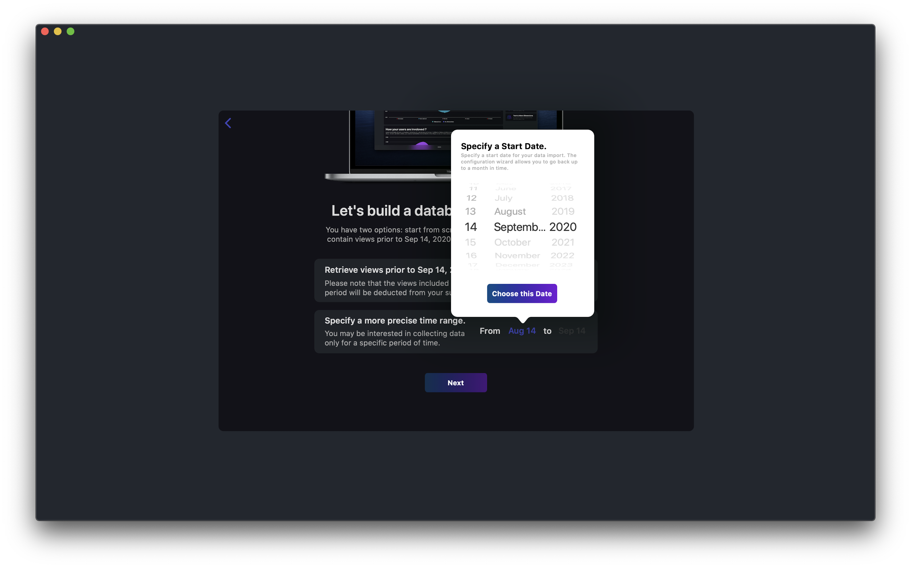
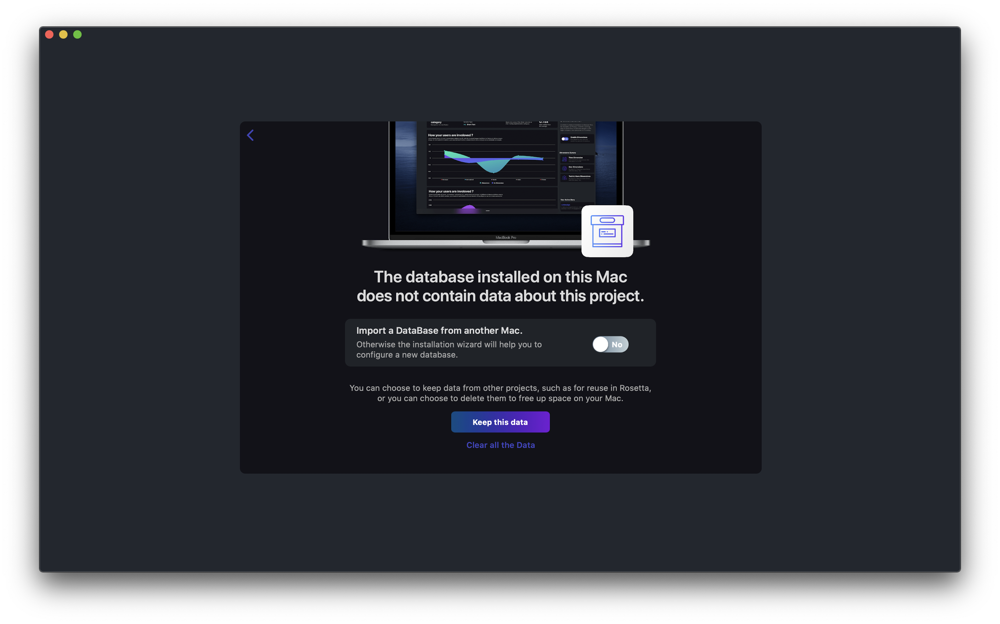

App users are so unpredictable that many publishers have started making video recordings of their app sessions. This way they made sure they didn't miss anything. Even what they hadn't anticipated. Unfortunately, relying on video recordings introduces significant privacy and sampling challenges. That's why we designed Vespucci. Vespucci relies on statistical models to replicate the experience provided by video recordings, less the constraints.
In order to perform statistical analysis on large datasets, Vespucci replicates some information from our servers on your Mac. This information comes from your app data usage. It is constantly evolving. Therefore, you need to regularly synchronize Vespucci with our servers to keep the data on which Vespucci builds its models and analyses up to date.
Initial configuration
When using Vespucci on a new Mac, or if you use Vespucci after logging out, the Sync Wizard helps you specify which usage data to bring back to your Mac. Several cases are possible:
If Vespucci does not find usage data on your Mac's hard drive, it will prompt you to build a new local database. You can choose to build this database as a replica of the usage data contained on our servers from a given date.
You can also choose not to retrieve any data from our servers and create a "blank" database that will be fulfill with usage data from after the configuration.
Data already exists on your Mac
If Vespucci finds usage data on your Mac's hard drive, it will ask you to keep it as a basis for future analysis.

You can choose to keep the pre-existing data. In this case, the data configuration wizard will prompt you to repatriate on your Mac the usage data produced after the pre-existing data. You will have the option of importing all of those data or only the data produced within a time range that you can set.

You can also choose not to keep this data and set up a blank database. The latter case was explained in section "no usage data".
When using Vespucci, it is important to keep your data up to date.
To retrieve all usage data generated since your last synchronization, simply click on the central item in the toolbar called "Tap to Sync Vespucci". This item also shows the date and time of your last synchronisation operation, the date and time from which the new data will be retrieved.
Stories are at the heart of the Vespucci experience. They allow you to describe a user behaviour that you will then visualize through dimensions (such as time, geographical location of your users, ...).
If you develop a meal delivery app you could write the following story: users who placed an order after observing a positive customer review.
You will then probably be interested in visualising the geographical areas in which such behaviour is most frequent. This is the role of dimensions. To learn more about dimensions, see the dedicated section.
To start writing your story, simply click on "Create a Story". In the Lab subscription plan, you can create up to 10 different stories. It can be very handy to have different stories available. For example, you can assign a user behaviour of interest to a story so that you can present it later, for example at a meeting.
To navigate between your stories, simply sweep your trackpad or magic mouse with two fingers.
To open and configure your story, double click (do not double click) on one of your stories.
The opening of a story initiates the story editor. The upper part of the story editor allows you to define your story as the active story, i.e. the one you will view through the dimensions. The lower part of the story editor allows you to configure your story itself.
A story is built around four functional blocks.
User behaviour
The first two (the cyan blue) blocks invite you to specify the behaviour you would like to observe. This is a kind of description of what you would observe on a video recording.
You may be interested in a specific user experience. In this case, select the option "A Given Journey" in the first block. In the second block, Vespucci will then present you with a list of all the Views or Screens from Segment and invite you to describe the transition from one view to another.
You may also be interested in a specific action. In this case, select the option "A Given Action" in the first block. In the second block, Vespucci will then present you with a list of all "Track" objects from Segment and invite you to select one of them.
Behaviour Determinant
The last two blocks are concerned with the determinant (the "driver") of the user behaviour that you have specified through the first two blocks. This involves specifying the content experienced by users adopting the target behaviour.
To do this, the third block lists all the content showed in the target view.
If you are a Segment user, these content elements correspond to the properties of your views and screens. We therefore invite you to fill in and track as many elements as possible in the properties of your views. If you are using the Vespucci SDK, these content correspond to all the elements that make up the user interface and are automatically tracked by Vespucci.
If you are using the Vespucci SDK, these content correspond to all the elements that make up the user interface and are automatically tracked by Vespucci.
The fourth block allows you to specify the value taken by the contents you selected in block 3.
When you watched video recordings, identifying content that was the source of a behaviour of interest was relatively easy: you could simply watch the films to identify behaviours that you might not have anticipated yourself. So the editor of our delivery app might be surprised to find that almost no user placed an order when the displayed price was less than 6€. Without videos, you have to rely again on your personal intuition to identify the content behind a certain action. This is a problem because you can't think of everything. That's why the story editor relies on the StoryFinder. The StoryFinder suggests stories you might not have anticipated.
The StoryFinder uses statistical models to help you identify content of interest. In other words, the StoryFinder helps you complete the third and fourth blocks of the story editor. The StoryFinder can be accessed from the toolbar using the "glasses" icon. You can also reveal the StoryFinder from the main view by dragging with two fingers on your trackpad or magic mouse.
The StoryFinder is divided into two sections. The first one helps you to identify the content (block 3) likely to influence the described behaviour while the second one helps you to specify the value taken by this content element (block 4).
The first section of the StoryFinder lists all content that may influence the described behaviour. For each of these content, our models assign a coefficient. The higher the coefficient, the more likely it is that this element will explain the described behaviour.
The second section of the StoryFinder presents the values taken by the elements listed in the first section of the StoryFinder. It is organized in three frames. The first frame presents the probability of performing the target action knowing the different values taken by the content item.
The second frame presents the time spent by the user on the original view knowing the different values taken by the content item.
The third frame presents the path adopted by the user in your app according to the different values taken by the content item.
Now that you have written your story in the story editor using the insights of the StoryFinder, it is time to visualize it. Visualizing a story is about when, where and in what context the scenario you have described occurs. This visualisation takes place through dimensions.
The dimensions can be accessed using the buttons in the left column of Vespucci. There are three of them.
The time dimension allows you to display the occurrence of the story according to the time of day, the day of the week or the month. The lower frame shows the commitment of your users according to these different temporal measures.
The technological dimension allows you to tell your story according to the operating system of your users, the language of their device or the model of their terminal.
{kind=link}
{kind=link}
{kind=link}
{kind=link}
{kind=link}
{kind=link}
{kind=link}
{kind=link}
{kind=link}
{kind=link}
{kind=link}
{kind=link}
{kind=link}
{kind=link}
{kind=link}